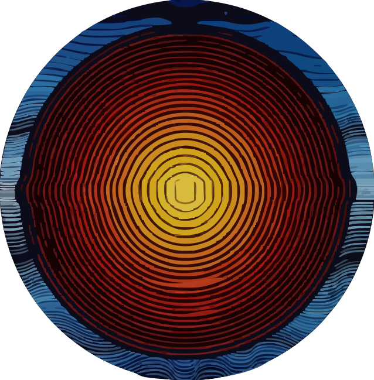

Landing pages have no top bar, only the hamburger (top right) — click it to open the directory menu, which replaces the link row. The CV page shows the top bar with logo B. The original disc appears once, as the CV's closing mark.
Hi, I'm Alex. Software engineer in Zurich. Election maps for a newspaper, an ERP nobody will ever see, CMS infrastructure for the Swiss government. Business degree, then the terminal.
Bikes, board games, history podcasts. This is my kitchen.
Hi, I'm Alex. Software engineer in Zurich. Election maps for a newspaper, an ERP nobody will ever see, CMS infrastructure for the Swiss government. Business degree, then the terminal.
Bikes, board games, history podcasts. This is my kitchen.
Hi, I'm Alex. Software engineer in Zurich. Election maps for a newspaper, an ERP nobody will ever see, CMS infrastructure for the Swiss government. Business degree, then the terminal.
Bikes, board games, history podcasts. This is my kitchen.

Try next: "light 5d" · "menu as a full-screen overlay in 5c" · "3-col apps list in 5a"
Hi, I'm Alex. I make software, mostly for the web. Election maps and interactive stories for a newspaper, an ERP nobody outside the company will ever see, CMS infrastructure for the Swiss government. I studied business, ended up in the terminal, and stayed.
Off-screen: long bike rides, board games with too many rules, history podcasts. This site is my kitchen.
I'm Alex. I build software for the web and occasionally the servers underneath.
Business degree, then the terminal. Bikes, board games, history podcasts. Below: where the last nine years went.
Try next: "4a but light" · "4c ruler inside 1e" · "4b with the header from 2a"
Hi, I'm Alex. Software engineer in Zurich. Election maps for a newspaper, an ERP nobody will ever see, CMS infrastructure for the Swiss government. Business degree, then the terminal.
Bikes, board games, history podcasts. This is my kitchen.
Software engineer in Zurich. Election maps for a newspaper, an ERP nobody will ever see, CMS infrastructure for the Swiss government. Business degree, then the terminal.
Bikes, board games, history podcasts. This is my kitchen: small tools I cook for myself, plus notes.
Try next: "3a with 'alex' instead of 'soup'" · "3c spine on the right" · "3b dark"
Software engineer in Zurich. Election maps for a newspaper, an ERP nobody outside the company will ever see, CMS infrastructure for the Swiss government. Business degree, then the terminal, and I stayed.
Hi, I'm Alex. I make software, mostly for the web. Over the last few years that meant election maps and interactive stories for a newspaper, an ERP that nobody outside the company will ever see, and CMS infrastructure for the Swiss government. I studied business, ended up in the terminal, and stayed.
Off-screen: long bike rides, board games with too many rules, history podcasts. This site is my kitchen — small tools I cook for myself, plus notes.
Software engineer in Zurich. Election maps for a newspaper, an ERP nobody will ever see, CMS infrastructure for the Swiss government. Business degree, then the terminal.
Try next: "2a typing the whole intro" · "2b dark" · "2c with the CV as a second markdown section"
Context: repo read (page.tsx waves filter, globals.css tokens, about/me/data.ts). Waves are recreated with the real feTurbulence/feDisplacementMap filter so they animate here too. Type: IBM Plex Mono (body, nerdy but readable) with JetBrains Mono for labels. New accent: coral #f7768e, echoing the disc's red rings without the current rust; a warmer amber alternative is used in 1c. Intro copy is a placeholder draft in your voice — replace freely. Portrait boxes accept a drag-and-drop image and render it B&W.
Hi, I'm Alex. I write software in Zurich, mostly the kind that lives in a browser.
Over the last few years that meant election maps and interactive stories for a newspaper, an ERP nobody outside the company will ever see, and CMS infrastructure for the Swiss government. I studied business, then ended up in the terminal and stayed.
Off-screen: long bike rides, board games with too many rules, and history podcasts. This site is my kitchen — small tools I cook for myself, plus notes.
Software engineer in Zurich. Election maps for a newspaper, an ERP nobody will ever see, CMS infrastructure for the government. Studied business, ended up in the terminal.
Off-screen: bikes, board games, history podcasts. This is my kitchen.
Election maps and interactive stories for a newspaper. An ERP that nobody outside the company will ever see. CMS infrastructure for the Swiss government. I studied business, ended up in the terminal, and stayed.
Off-screen: long bike rides, board games with too many rules, history podcasts. This site is my kitchen — small tools I cook for myself, plus notes.
I'm Alex. I build things for the web and occasionally the servers underneath.
Election maps for a newspaper, an ERP nobody will ever see, CMS infrastructure for the government. Business degree, then the terminal. Bikes, board games, history podcasts. This is my kitchen.
Try next: "1a layout with the label blocks from 1b" · "make 1c dark" · "1e with a compact education block" · "try logo C in 1d"